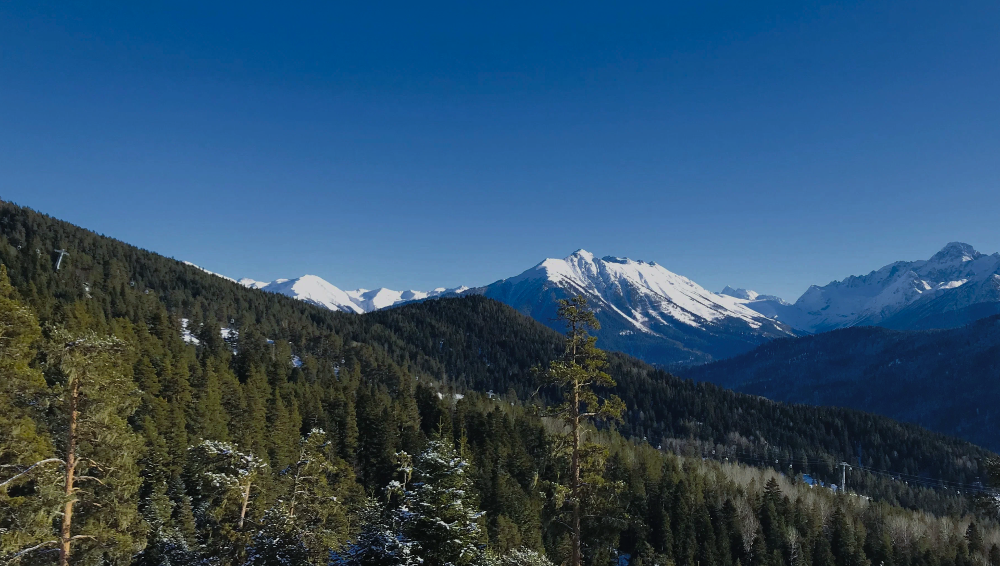
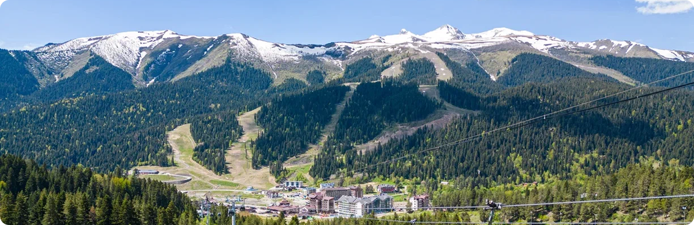
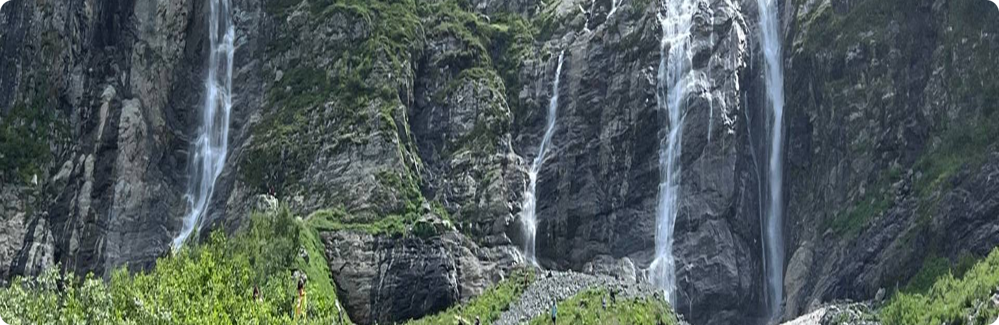
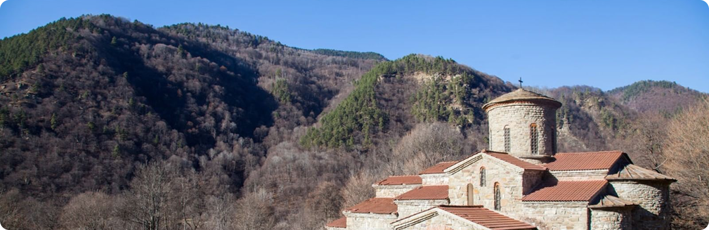

Архыз за
3 дня
Горный курорт, водопады и храмы, которым больше тысячи лет, — всё это Архыз за три дня!
3 дня
Продолжительность
1650 м
Высота курорта
360 км
Расстояние
6 точек
Локаций
День 1. Архыз — горный курорт Карачаево-Черкесии
Старт маршрута — Черкесск
Что посмотреть:
- Дорога из Черкесска идёт вдоль реки Большой Зеленчук и постепенно поднимается в горы. Уже к обеду вы окажетесь в посёлке Архыз
- Курорт «Архыз» расположен на высоте около 1650 метров. Летом канатная дорога поднимает к смотровым площадкам с видом на Главный Кавказский хребет
- Вечером стоит прогуляться по долине — здесь чистый воздух, хвойный лес и почти нет городского шума
Где остановиться:
- Кемпинги в долине реки Архыз
- Гостевые дома в посёлке Архыз
Подъём к курорту — горная дорога с серпантином. Заранее проверьте тормоза и заправьтесь: АЗС в горах встречаются редко

Архыз 43°33′ с. ш. 41°17′ в. д.
День 2. Софийские водопады
Переезд: Архыз — Софийская поляна
Что посмотреть:
- Софийские водопады — одно из самых известных мест Архыза. Потоки талой воды с ледников срываются с отвесной скалы
- Последний участок до поляны — грунтовка. Автодом лучше оставить в посёлке и доехать на местном трансфере или внедорожнике
- Тропа к водопадам занимает около часа в одну сторону. Нужны удобная обувь, дождевик и запас воды
Где остановиться:
- Кемпинги в долине реки Архыз
- Гостевые дома в посёлке Архыз
Часть долин Архыза находится в пограничной зоне. Перед поездкой уточните, нужен ли пропуск на выбранный маршрут

Софийские водопады 43°27′ с. ш. 41°20′ в. д.
День 3. Нижний Архыз — аланские храмы
Финиш маршрута: Нижний Архыз — Черкесск
Что посмотреть:
- Нижне-Архызское городище — остатки столицы средневековой Алании. Здесь сохранились храмы X века, одни из древнейших в России
- Неподалёку — наскальный «Лик Христа» и Специальная астрофизическая обсерватория с одним из крупнейших телескопов страны
- После обеда — спуск по долине Большого Зеленчука и возвращение в Черкесск

Нижний Архыз 43°41′ с. ш. 41°27′ в. д.